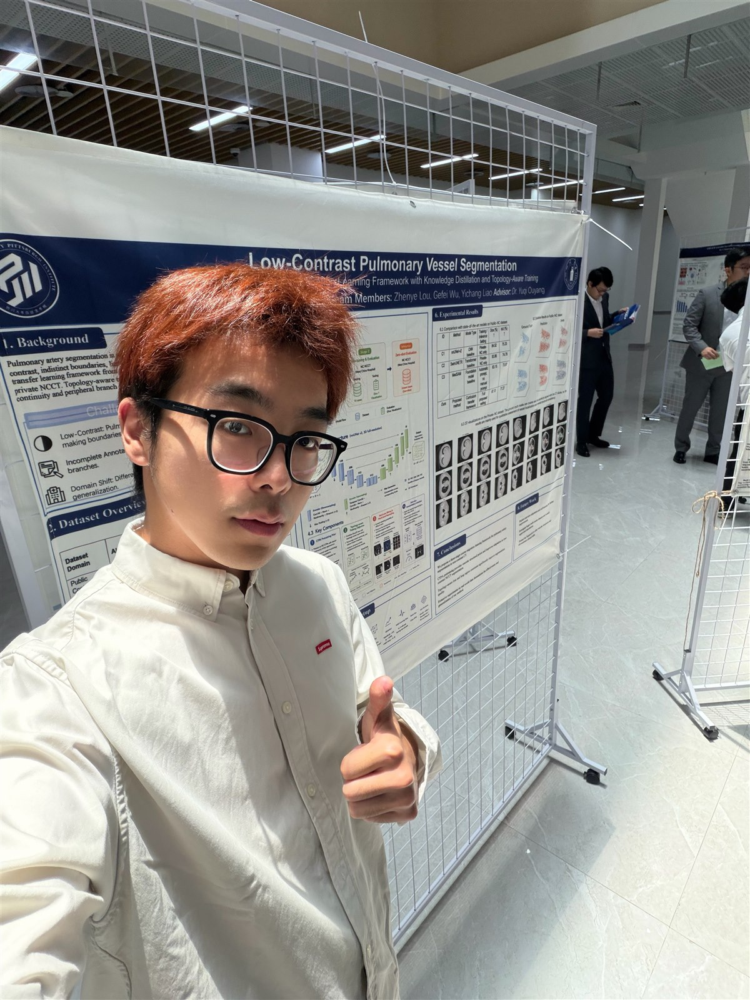

Micro-lesion segmentation
Designing centroid-guided learning systems for sub-3 mm brain tumor segmentation and counting in multimodal MRI.
Medical image analysis · Segmentation · Multimodal AI
Computer science undergraduate and medical AI researcher building efficient, clinically motivated systems for micro-lesion segmentation, pathology foundation models, and adaptive medical image understanding.

Research
Designing centroid-guided learning systems for sub-3 mm brain tumor segmentation and counting in multimodal MRI.
Contributing to whole-slide image representation learning pipelines that move beyond patching, segmentation, and handcrafted feature extraction.
Developing parameter-efficient adaptation and automatic prompting methods for nuclei segmentation across heterogeneous medical domains.
Exploring image-text learning, retrieval workflows, and tool-augmented reasoning for medical decision support.
Publications and Manuscripts
Expand entries for status, venue, and contribution context.
Co-first author. CAS Q1 TOP journal work on domain-generalized nuclei segmentation using medical-domain adaptation and automatic prompting.
DOI: 10.1016/j.knosys.2025.113641
Co-first author. High-resolution medical segmentation study focused on efficient attention modeling for memory-constrained clinical imaging workloads.
DOI: 10.48550/arXiv.2504.06205
First author. Proposes centroid-guided multi-task learning, volume-calibrated loss, and size-aware curriculum optimization for micro brain tumor analysis.
Co-author. Biomedical analysis work studying topological and wavelet-based representation for ultrasound tumor diagnosis.
DOI: 10.1016/j.cmpb.2025.108859
Co-author. Hybrid CNN-Mamba segmentation architecture for medical image analysis.
DOI: 10.1145/3757324
First author. Lightweight adaptation and prompting framework for generalizable nuclei segmentation.
First author. Automated adaptive framework targeting accurate nuclei segmentation across biomedical image settings.
Research Experience
Research Intern · Prof. Gao Huang, Dr. Yulin Wang · Beijing
Contributed to pathology foundation model infrastructure, including data auditing, preprocessing standardization, large-scale training support, downstream benchmark design, and research synthesis for whole-slide image learning.
Research Assistant · Prof. Zhen Chen · Hong Kong SAR
Spearheaded MicroBT, developing centroid-guided segmentation and instance-level localization for multi-modal micro brain tumor analysis on BraTS-Lighthouse 2025.
Research Assistant · Prof. Xiangjian He · Nottingham
Led parameter-efficient adaptation for medical foundation models, including HS-Adapter, Gaussian-kernel prompting, and a two-stage mask decoder for nuclei segmentation across public cross-domain datasets.
Research Intern · Prof. Jian Wu · Hangzhou
Studied medical AI agents, ophthalmology foundation models, multimodal learning, image-text integration, retrieval, and missing-modality pretraining.
Research Assistant · Prof. Kang Li · Chengdu
Led biomedical deep learning and fusion strategy projects, contributing to manuscripts on adaptive nuclei segmentation and medical image analysis.
Research Intern · Chengdu
Worked on biomedical data analysis with machine learning and explored topology-driven feature extraction for ultrasound tumor diagnosis.
Education
B.S. in Computer Science and Technology · 2022 - 2026
GPA: 3.87 / 4.00. Academic training in computer science with research centered on medical image computing and clinically motivated AI systems.